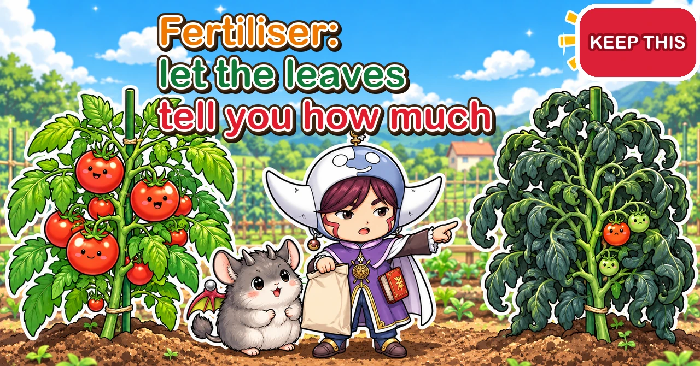
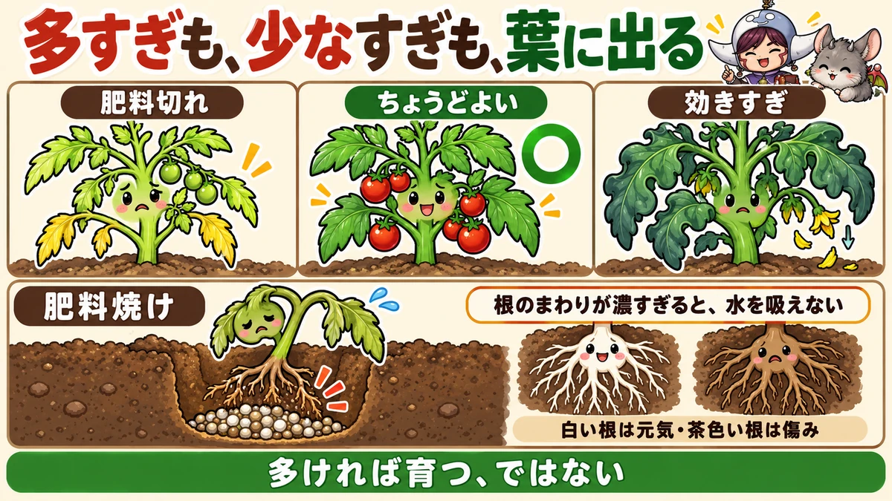
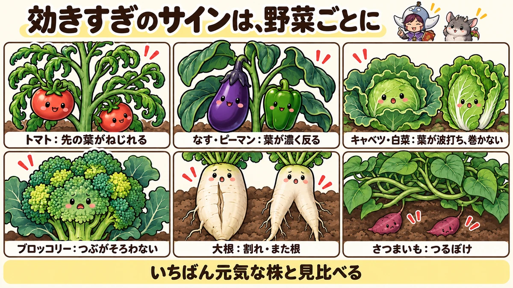
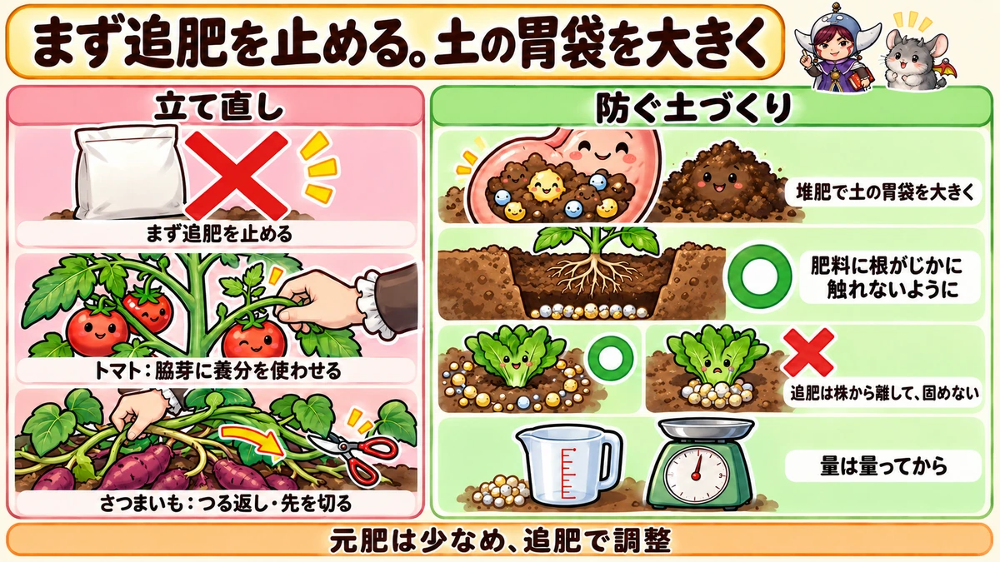

Too much fertiliser 🌿 Let leaf colour and shape tell you how much to give

🌿 "My tomatoes are lush and dark green, but there's hardly any fruit."
🌿 "I fed my seedlings at planting and they wilted — and watering didn't bring them back."
🌿 "The sweet potato vines are everywhere. Where are the potatoes?"
Hello, I'm Eiko. Eight years of growing vegetables organically and without pesticides, and a teaching licence in science.
"It looks tired — give it some feed." "I want them bigger — add a bit more." In a home plot it's very tempting to keep adding fertiliser. But leaves that are lush while fruit won't set, Chinese cabbage that won't heart up, daikon that split, sweet potatoes that are all vine — surprisingly often, the cause is too much fertiliser, not too little.
Fertiliser is a matter of judgement: too little and plants don't grow, too much and they don't grow well either. And how it acts changes with your soil, the weather and what grew there before, so the same amount won't give the same result every year. The good news is that vegetables tell you when they have too much or too little — in the colour and shape of their leaves. This article covers how fertiliser burn works, telling too much from too little, the signs crop by crop, rescuing over-fed plants, and the soil that makes fertiliser mistakes rarer.
Too much: leaves too dark (blackish green), too big, wavy, twisted or curling inwards; stems thick right to the tip; all vine and no flowers or fruit; more disease and pests.
Too little: pale, yellowish-green leaves; yellowing from the lowest, oldest leaves upwards; small leaves, thin stems; tomato flowers creeping up towards the growing tip; small or bent cucumbers.
Fertiliser burn: seedlings wilt just after planting or feeding and don't recover with water; leaf edges and tips brown as if scorched; roots brown instead of white.
What to do: stop feeding first; help the plant use up the excess in a way that suits the crop (grow on a side shoot, lift or cut back vines); next time, give less base fertiliser and more compost.

What this diagram says （図解の文字）
- Too much or too little — it shows in the leaves
- "Too little" ／ "Just right" ／ "Too much"
- "Fertiliser burn": "When it's too concentrated round the roots, they can't take up water" — "White roots are healthy, brown roots are damaged"
- "More doesn't mean better growth"
① Fertiliser basics, briefly
The three main nutrients
Fertiliser bags usually show three numbers: nitrogen, phosphate and potash (N-P-K). Roughly, each does this:
- Nitrogen: grows leaves and stems. Too little and leaves go pale; too much and you get all leaf
- Phosphate: involved in flowering, fruit set and root growth
- Potash: strengthens roots and stems, fills out fruit, and helps the plant manage water
When "too much fertiliser" causes trouble, it's usually nitrogen. It shows most clearly in leaf colour, leaf size and how lush the plant gets.
Fast-acting and slow-acting
- Fast: granular synthetic fertilisers and liquid feeds. They act soon after you apply them — and a wrong amount quickly becomes too much, or burn
- Slow: most organic fertilisers, such as oilseed cake, rice bran and fermented organic fertiliser (bokashi). Soil microbes have to break them down first
- In between: chicken manure acts fairly quickly for an organic fertiliser
With fast fertilisers, small differences in amount show up in the plant almost at once. With slow ones, the delay tempts you to think "it isn't working" and add more — and then it all kicks in together later.
What to watch with each
- Synthetic granules: stick to the stated amount, never pile them at the base of the plant, and use even less in containers
- Chicken manure: fairly fast and high in calcium; too much is easy. Use well-composted manure
- Oilseed cake: high in nitrogen. Fine for leafy crops, but go easy for fruiting crops, beans and sweet potatoes. It can smell and attract insects as it breaks down
- Composted cow manure: low in nutrients — mainly there to make soil crumbly. More a soil conditioner than a fertiliser
- Rice bran: low in nitrogen, high in phosphate. Don't scatter it raw round plants
- Bokashi: because it's fermented, it's gentler on roots than raw organic matter — but still keep to the amount
② What fertiliser burn is
Too concentrated round the roots
Fertiliser dissolves in the water in the soil and is taken up by the roots. But when the solution round the roots gets too strong, the roots can't draw water in — instead, water is pulled out of them. The roots are damaged, the plant wilts, and in bad cases it dies. That's fertiliser burn.
It's much like scattering salt on soil so nothing grows. Fertiliser, too concentrated, is poison to roots.
When it tends to happen
- Lots of fertiliser put in the bottom of the planting hole, with the seedling planted straight on top
- Top-dressing heaped at the base of the plant
- More synthetic fertiliser than the stated amount
- Plenty of fertiliser in a small volume of soil, such as a container
- Lots of fertiliser applied in a dry spell, when the soil is dry
Gas from raw organic matter
A slightly different problem: if you dig in poorly composted chicken manure, raw rice bran or oilseed cake just before planting, gas and heat released as it breaks down can damage roots. Mixing organic fertilisers in 2–3 weeks before planting is the safe way.
Check the roots
If you're not sure whether a wilting plant has fertiliser burn, dig gently at its base and look at the roots.
- Healthy roots: white, with fine, growing tips
- Burnt or damaged roots: brown, with darkened tips and few new white roots
- The soil round them: are there undissolved lumps of fertiliser? A strong fertiliser smell?
Brown, damaged roots with a lump of fertiliser nearby make burn very likely.
Preventing it
- Mix base fertiliser in 2–3 weeks before planting
- If you put fertiliser in the planting hole, cover it with soil so roots don't touch it directly
- Top-dress a little away from the stem, scattered rather than heaped, and work it lightly into the soil
- Keep to the stated amount — and measure it once rather than guessing
- After top-dressing, water if the soil is dry so the fertiliser settles in
③ What happens when there's too much
All leaf, no fruit
Nitrogen is the nutrient that builds leaves and stems. When there's too much, the plant spends its energy on leaves and stems and puts off flowering and filling fruit. If tomatoes, aubergines, beans or sweet potatoes look magnificent but won't fruit, suspect too much nitrogen.
More disease and pests
Lots of nitrogen grows soft, watery leaves and stems. Fungal diseases get in more easily, and for sap-suckers like aphids the plant becomes an easy feast. Crowded foliage that stops air moving adds to the disease problem.
Split or forked roots
With too much fertiliser, daikon and carrots try to swell too fast and split, or the root tip hits a lump of fertiliser, is damaged, and forks into several legs.
Poorer flavour
Over-fed vegetables can grow big yet taste bland or harsh, or turn tough and fibrous.
④ The signs, crop by crop
Tomatoes
Look at the top of the plant — it shows how well-fed a tomato is.
- Just right: the top leaves spread in a gentle arc; leaf colour is a bright green; the stem near the tip is about as thick as a pencil; the gap between the highest flower cluster and the growing tip is about a spread hand
- Too much: the top leaves twist and curl inwards; they're a dull, dark green with a bumpy surface; the stem stays thick right up to the tip. In bad cases it cracks or splits open; flowers drop easily
- Too little: small top leaves held stiffly upright; a thin stem; the highest flowers creep close to the tip
Aubergines and peppers
- Too much: dark, large leaves whose tips bend back; fruit sets poorly and may taste harsh
- Just right: bright green leaves of even size
- Too little: paler leaves, poorly formed flowers, poor fruit set
Through a summer of harvesting, top-dressing every 2–3 weeks is the usual guide — but when you see signs of too much, skip it and watch.
Cucumbers
- Too much: large, dark, crowded leaves; all vine and poor fruit set; more disease
- Too little: paler leaves, bent fruit or fruit that narrows at the tip, yellowing lower leaves
Cucumbers also suffer quickly when they run short, so check for both kinds of sign every time you walk round.
Cabbage and Chinese cabbage
- Too much: leaves turn a dark, dull, mossy green and go wavy; outer leaves grow huge while the head stays loose or doesn't form
- Just right: clear, bright green leaves that open out naturally
Feeding a loose head can make it even less likely to heart up. If the leaves are dark and wavy, don't feed — wait. It may start to heart a little late.
Broccoli
- Too much: a lumpy head with uneven beads, patchy colour, sometimes a hollow stem inside
- Just right: fine, even beads and an even colour
Daikon and carrots
- Too much: leaves spread too large; roots split or fork, with rough skin and tough fibres
- Too little: roots stay thin and spindly
Daikon is very good at gathering nutrients from the soil. Holding back on base fertiliser gives better-shaped roots. Oversized daikon leaves are a sign of too much.
Sweet potatoes ("all vine")
- Too much: large, dark leaves and thick vines racing everywhere, while the potatoes don't swell. Japanese growers call this tsuruboke — "vine-crazy"
- Just right: bright green leaves and vines that grow at a steady pace
Sweet potatoes need almost no fertiliser. Even without any base fertiliser, leftovers from the previous crop can be enough to send them all to vine.
Beans and peas
Edamame, green beans, peas and broad beans have bacteria in their roots that turn nitrogen from the air into food. So with too much nitrogen fertiliser they grow all leaf and vine and flower poorly. Keep base fertiliser very light.
Onions and Welsh onions
Too much nitrogen makes leaves grow long and floppy and more prone to diseases such as downy mildew. Onions that still have fertiliser acting after the point when spring feeding should stop form loose bulbs that rot easily in storage.
Spinach, komatsuna and other leafy greens
Leafy greens use plenty of nitrogen, but too much makes leaves big, soft and watery, and attracts pests. In soil that can't hold fertiliser well, the concentration can spike, damaging roots and stunting growth.
Squash and watermelon
Like sweet potatoes, these go "all vine" with too much nitrogen: big leaves, and female flowers that don't set or drop their fruit. Keep base fertiliser light and top-dress only once fruit has set and started to swell — in that order, and you'll avoid most of it.
Potatoes
Too much nitrogen gives big, lush stems and leaves while the tubers stay small. Overgrown plants flop, stay damp and get disease more easily. Keep to the stated base fertiliser and go easy on feeding when you de-shoot and earth up.
Sweetcorn
Sweetcorn is a hungry crop. Run short and leaves go pale and the cobs don't fill to the tip. But a big dose of base fertiliser all at once can damage roots, so split it between base fertiliser and top-dressing.
Strawberries
Strawberry roots are sensitive to strong fertiliser. Too much at planting, or top-dressing heaped round the crown, can damage roots and weaken the plant. Top-dress a little away from the plant, in small amounts several times.

What this diagram says （図解の文字）
- The signs of too much differ by crop
- "Tomato: top leaves twist" ／ "Aubergine and pepper: dark leaves that bend back" ／ "Cabbage and Chinese cabbage: wavy leaves, won't heart up"
- "Broccoli: uneven beads" ／ "Daikon: split and forked roots" ／ "Sweet potato: all vine"
- "Compare with your healthiest plant"
How to check on your rounds
- Compare several plants of the same crop in the same bed
- Leaf colour: clear green, dull dark green, or pale yellowish-green?
- Leaf size and shape: too big? wavy or twisted?
- Stems: too thick or too thin? (For tomatoes, the stem near the tip)
- Flowers and fruit: are flowers dropping? How is fruit setting?
- Lower leaves: are they yellowing?
- If a plant worries you, dig a little at its base and look at the roots and how damp the soil is
Don't decide on one visit. Watch for about a week and see how things change — you'll make fewer wrong calls.
⑤ Rescuing over-fed plants
First, stop feeding
When the signs of too much appear, stop top-dressing. Even if a feed is due, skip it if the plant looks over-fed. Fertiliser in the soil goes down over time as plants take it up and rain carries it away.
Tomatoes: let a side shoot use it up
One approach is to let side shoots, which you'd normally pinch out small, grow a little bigger before removing them. A growing shoot uses nutrients, so it soaks up some of the excess. You can also train the plant on two main stems to share the vigour.
If the growing tip has stopped, keep one strong side shoot from just below a flower cluster and let it take over as the leader.
Sweet potatoes: lift the vines, or cut the tips
For vine-crazy sweet potatoes, lift the vines that have spread over the ground, pull the roots at their joints out of the soil and flip the vines over. This cuts down how much they draw from the soil.
If lifting vines in the heat is too much, you can cut back the tips of overlong vines instead; a vigorous plant won't mind. Another option is to train the vines up a net or supports so they can't root into the ground.
Daikon: adjust next time
Daikon are hard to rescue once they've grown. Next time, try:
- Sowing a little more thickly and growing them slightly crowded. More plants share the nutrients, so each gets less of the excess
- Digging deep and turning the soil over, swapping fertiliser-rich topsoil for leaner soil from below
Aubergines and peppers: harvest early and often
For over-lush aubergines and peppers, skip feeding and pick fruit early and often so the plant is kept busy growing fruit. Thinning crowded stems and leaves to let in light and air also helps prevent disease.
Beans and peas: wait for flowers
For beans grown lush on too much nitrogen, don't feed — wait for them to flower. If the vines have run too long, pinch the tips so side shoots form and flower.
Cabbage and Chinese cabbage: wait
If heads are loose from over-feeding, don't feed — wait. Once the leaf colour settles, they may start to heart a little late.
Can you wash it out with water?
In a container you've clearly over-fed, water heavily so it runs out of the drainage holes; that washes out some of the excess. In the open ground, flushing with water does little, and overwatering can itself damage roots — so don't try to force it.
⑥ When plants are short of food
Check the signs before you feed
Pale leaves, yellowing from the bottom up and small leaves are signs to top-dress. But yellow leaves have other causes too:
- Roots damaged by overwatering or poor drainage
- Not enough water
- Cold or heat
- Disease or pests
Dig a little to check the roots and how damp the soil is before deciding. Feeding a plant with damaged roots can cause fertiliser burn.
Cold can change leaf colour too
From autumn into winter, the leaves of cabbage, broccoli and Chinese cabbage often take on a purplish tinge. In most cases that's from the cold, not a lack of fertiliser, and the colour can return when it warms up. Don't rush to feed because winter leaves change colour.
Add a little at a time
Adding a lot at once to a hungry plant just swaps one problem for another: too much, or burn. Give the stated amount split over several feeds, and adjust as you watch the plant.
⑦ Using liquid feed
Liquid feed goes on with the watering and acts fast — which also means the wrong strength burns quickly.
- Dilute exactly as the label says. Never mix it stronger "to make it work faster"
- If the soil is bone dry, water first to moisten it, then feed
- Keep to the interval. Don't feed every time you water
- For foliar feeds too, keep to the stated dilution and frequency
For containers and seedlings, where there's little soil, it's safer to dilute even more than the label says.
⑧ Through the year
Spring planting
- Base fertiliser 2–3 weeks before planting; don't overload the planting hole
- Don't top-dress summer crops between planting and getting established
- Where sweet potatoes or beans are going, think about what the last crop left behind
Summer
- For crops you're harvesting continuously, top-dress about every 2–3 weeks — but skip it when you see signs of too much
- Don't apply a lot in a dry spell. It sits undissolved, then acts all at once when rain comes
Autumn and winter
- Autumn and winter crops use fertiliser from planting through their main growth. Too much when they're forming heads gives loose heads
- As it gets colder, plants take up less. Keep winter feeding very light
Winter soil-building
- Put compost on empty beds to give the soil a bigger "stomach"
- Look back at last year's mistakes (too much, too little) in your growing notes and decide this year's base fertiliser
⑨ Containers
Less soil, so it's easier to overdo
With little soil in a container, the same amount of fertiliser ends up more concentrated than in the ground, so too much and burn are more likely. At the same time, each watering washes some out, so running short is more likely too.
- Most bagged vegetable compost already contains fertiliser. Check the bag and don't add too much base fertiliser
- Top-dress small amounts, often
- Dilute liquid feed as the label says — never stronger
- Watch leaf colour and shape more closely than you would in the ground
⑩ Soil that makes mistakes rarer
Compost gives soil the power to hold fertiliser
Soil can hold on to fertiliser and store it. Soil that does this well doesn't get suddenly too strong when you add fertiliser, and loses less to rain. Think of it as a big stomach.
What enlarges that stomach is organic matter such as compost and leaf mould. As it breaks down, it forms humus, which holds on to nutrients. Thin soil with little organic matter has a small stomach: a little too much fertiliser and it's over-strong and burns roots. Adding compost every year is partly about making that stomach bigger.
Think about the last crop's fertiliser
If you fed the previous crop heavily, fertiliser may still be in the soil when you plant the next. This matters most before crops that want little, like sweet potatoes and beans — remember whether the last crop had a lot. Growing notes help here.
Light base fertiliser, adjust with top-dressing
Once base fertiliser is in, you can't take it out. Keep it modest and make up any shortfall by top-dressing as you watch the plants — far fewer failures that way.
Know when to stop feeding
Some crops have a point near harvest after which you stop feeding:
- Onions: fertiliser still acting after the last spring feed gives loose bulbs that rot in storage
- Daikon and carrots: repeated feeding once roots start to swell leads to splitting and rough skin
- Leafy greens: feeding just before harvest makes leaves soft, watery and quick to spoil
Decide "feed until when" at planting time and you'll avoid most over-feeding.
Keep notes
What you gave, when, which fertiliser and how much — and how the plants looked afterwards. A few simple notes cut next year's failures dramatically.
- Base fertiliser: type and amount
- Top-dressing: dates and amounts
- Changes in leaf colour and shape, anything you noticed
- Harvest size, and failures such as splitting or all-vine
Knowing what grew in a spot last year and how much it was fed makes deciding the next crop's base fertiliser much easier.
Measure, don't guess
"A handful" varies a lot from person to person. Weigh the amount on the bag once with scales or a measuring jug, and learn how many of your own handfuls that is. It stops you over-applying.

What this diagram says （図解の文字）
- Stop feeding first. Give the soil a bigger stomach
- "Rescue": "Stop feeding first" ／ "Tomato: let side shoots use the nutrients" ／ "Sweet potato: lift the vines, cut the tips"
- "Soil that prevents it": "Make the soil's stomach bigger with compost" ／ "Keep roots from touching fertiliser directly" ／ "Top-dress away from the plant, and don't heap it" ／ "Measure before you apply"
- "Light base fertiliser, adjust with top-dressing"
⑪ Where growers disagree
Organic fertiliser can't overdo it?
You'll hear that organic fertilisers act slowly, so they don't overdo it. Many do act more gently than synthetic fertiliser — but in large amounts, organic fertiliser can still cause too much growth and burn. Some, like chicken manure, act fairly fast. Don't assume "organic means safe"; keep to the amount.
Cut the water to an over-fed tomato?
One view is that holding back water calms an over-lush tomato. On the other hand, too little water risks split fruit and blossom end rot. Stopping feeding and letting side shoots use up the excess is the safer place to start.
Grow with no fertiliser at all?
In soil still holding fertiliser from the last crop, some growers raise sweet potatoes and beans with none. In poor soil, though, no fertiliser means poor growth. The answer depends on your soil, so decide by watching the plants.
⑫ Common mistakes
- Feeding a plant because it looked tired — if the cause was damaged roots or watering, feeding makes it worse. Find the cause first
- Fertiliser in the planting hole, seedling straight in — roots touch the fertiliser and burn. Cover it with soil, or wait before planting
- Top-dressing heaped at the base — it's too strong there and damages roots. Scatter it a little away from the plant and mix it in
- Feeding a Chinese cabbage that won't heart — if the leaves are dark and wavy, it may be too much already. Wait instead
- Giving sweet potatoes the same base fertiliser as everything else — they go all vine and the potatoes don't swell. Give very little, or none
⑬ Questions people ask
Isn't dark green a sign of a healthy plant? Healthy leaves are the clear green typical of that crop. A blackish, dull dark green usually means too much fertiliser, especially nitrogen. Compare with a healthy plant of the same crop.
My container plant has fertiliser burn. What now? Water heavily so it runs out of the bottom and washes out some of the excess. Then hold off feeding for a while and rest the plant in the shade. If the roots are badly damaged, consider repotting into fresh compost.
How long until an over-fed bed recovers? It depends on rainfall, soil and what you grow, so there's no fixed time. Recover it bit by bit: grow hungry crops (leafy greens, sweetcorn) to use up the nutrients, dig deep and turn the soil over, and add compost to enlarge the soil's stomach. For the next crop, start with less base fertiliser or none, and top-dress as you watch.
Should I just follow the amount on the bag? It's a general guide. If your soil already has plenty of compost, or the last crop's fertiliser is still there, start with less and adjust as you watch the plants.
Are soil test kits useful? Simple home kits and testing services can give you soil acidity and a rough idea of nutrient levels. Where fertiliser problems keep happening, or you don't know what the last crop left, testing once gives you something to go on when deciding base fertiliser. But don't decide on numbers alone — combine them with how the plants actually look.
Will a burnt seedling recover? If the root damage is light, stop feeding and keep the soil from drying out, and new roots may grow and bring it back. If it's still wilted after a few days with no new leaves, the roots are badly damaged; consider replacing it with a spare seedling, planted away from the strong spot.
Is top-dressing after rain a good idea? After rain the soil is moist, so fertiliser dissolves and reaches roots easily. But if it's muddy straight after heavy rain, working on it compacts the soil — wait until it's a little drier. Top-dressing just before heavy rain can see it washed away.
My spinach grows in some places and not others. Spinach uses plenty of nitrogen, but in soil with a small stomach a lot of fertiliser can get too strong and damage roots, leaving patches where plants fail. Spinach also dislikes acid soil, so adjust the acidity with lime and add plenty of compost before sowing.
I can't tell whether it's too much. Compare with a healthy plant of the same crop in the same bed: leaf colour, leaf size, leaf shape (wavy, twisted) and stem thickness. When in doubt, skipping one feed and watching is the safe choice.
Science bit: four whys 🔬
Why does strong fertiliser damage roots? Water tends to move from a weaker solution to a stronger one. When the soil water round the roots becomes stronger than the water inside them, water is drawn out of the roots. Far from taking water in, the roots lose their own water, wilt and are damaged. It's the same thing that happens when you put salt on a slug.
Why does lots of nitrogen stop fruit setting? A plant divides the food it makes from nutrients and light between growing leaves and stems and growing flowers and fruit. With plenty of nitrogen, it reads the situation as "I can still get bigger" and puts leaves and stems first. Flowering and fruiting come once the plant has grown enough and the rush of nutrients has eased. Too much nitrogen delays that switch, and the plant keeps on growing leaf and stem.
Why does hunger show in the lower leaves first? Nitrogen is a nutrient the plant can move around inside itself. When the roots can't get enough, it moves nitrogen stored in old, lower leaves to the new leaves that are still growing. Stripped of nitrogen, the lower leaves can't stay green and turn yellow.
Yellowing from the bottom up is a sign the plant is protecting its young leaves first. If instead only the new leaves are discoloured, or leaves get spots, think of other causes — another nutrient running short, disease, cold.
Why does compost mean fewer fertiliser mistakes? Particles of humus and clay can hold fertiliser nutrients on their surfaces. When you add fertiliser, some of it clings to them, which stops the soil water from suddenly getting too strong. As plants take up nutrients and the soil water weakens, nutrients let go of the particles little by little. That's how soil rich in humus keeps fertiliser at a steady strength — soil with some slack in it.
To sum up
- ✅ More fertiliser isn't better. Too much means no fruit, more disease and pests, split roots and poorer flavour
- ✅ Fertiliser burn: the solution round the roots is too strong for them to take up water. Don't overload planting holes or the base of plants
- ✅ Too much: leaves too dark and big, wavy or twisted, thick stems, all vine
- ✅ Too little: pale leaves, yellowing from the bottom, small leaves, thin stems
- ✅ Tomatoes: watch the top leaves and stem. Cabbages: colour and waviness. Sweet potatoes: all vine
- ✅ If it's too much, stop feeding first. Tomatoes: let side shoots use it up. Sweet potatoes: lift the vines or cut the tips
- ✅ Yellow leaves: rule out other causes before feeding
- ✅ Compost gives the soil a bigger stomach. Light base fertiliser, adjust with top-dressing
- ✅ Not sure if it's burn? Look at the roots: white is healthy, brown and darkened is damaged
- ✅ Dilute liquid feed as the label says — never stronger
Fertiliser is something you adjust by watching the plants. The amount on the bag, or the amount someone told you, is only a starting point. On your next walk round, compare the leaf colour and shape of your healthiest plant with the one that worries you. You'll start to see the signs your vegetables are giving you 🌿
Thank you for reading!